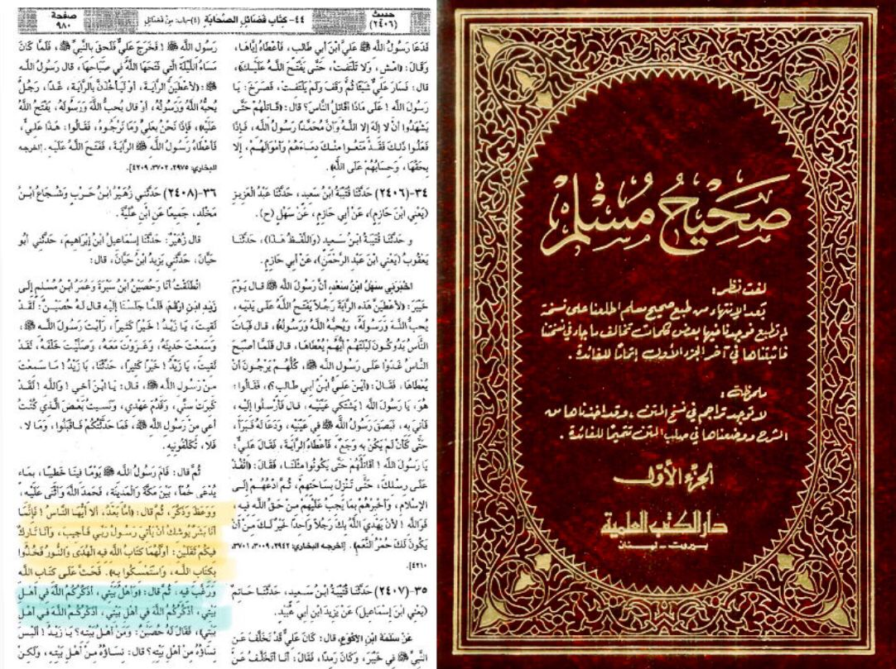
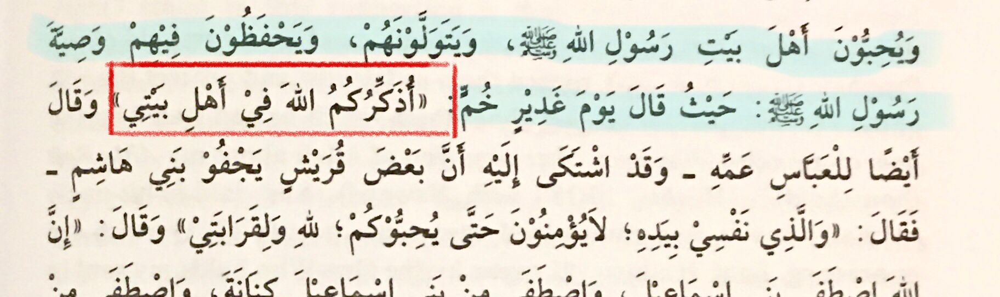
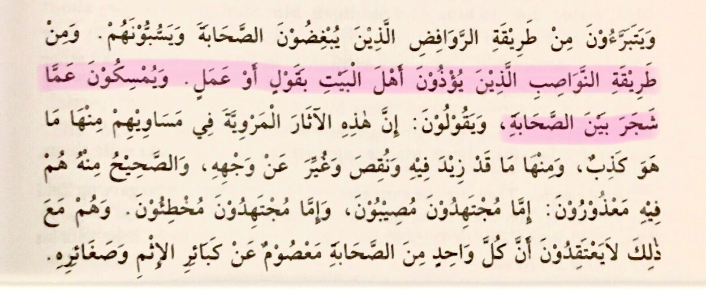

Ahl al-Bayt, often translated as "People of the House" or "Family of the House," refers to the family of our beloved Prophet Muhammadur Rasoolallah ﷺ in Islamic terminology. The term holds great significance, especially among Muslims who consider the Ahl al-Bayt as an essential part of the Islamic tradition, revered for their piety, virtue, and close relationship with the Prophet.
The manhaj of Ahlus Sunnah is to love and grab the rope of both the Sahaba and Ahl e Bayt. We always talk about the virtues of the Sahaba, May Allah be pleased with them. Now, let's talk about the beloved Household of our Rasool ﷺ
Importance of Ahlul Bayt
Prophetﷺ, during the event of the farewell Hajj at Ghadir e Khumm, said that he had left two things for us. The first is the Qur'an and the second is his Ahlul Bayt

Principle of Ahlus Sunnah
Ibn Taymiyyah, may Allah have mercy on him, while explaining the principles of Ahlus Sunnah writes:
'Ahlus Sunnah love the Ahlul Bayt, ally them and protect the promise of Rasoolallah ﷺ concerning them, which he said on Ghadeer e Khumm "I remind you of my Ahl e Bayt" Sahih Al Muslim 15/188'

Source:Aqeedah Al Waasitiyyah
Ahlus Sunnah is moderate
Ibn Taymiyyah, may Allah have mercy on him, writes again in his same treatise:
'Ahlus Sunnah is free from the Rawafidh who freed themselves from the Sahaba and curse them, Ahlus Sunnah is also free from the Nawasib who hurt Ahl e Bayt'

In Ahlus Sunnah, the Ahlul Bayt, the Prophet's ﷺ family, are deeply respected and loved. This respect stems from the Quran and Hadith, which stress their unique status and connection to the Prophetﷺ. For example, the Quran asks the Prophetﷺ to tell the people that he wants no reward for his message except love for his close family. Many hadiths reinforce this, showing the Prophet’s ﷺ love and concern for his family and encouraging Muslims to honor them.
Even in daily prayers, Ahlus Sunnah includes blessings on the Prophet’s ﷺ family, showing that love for the Ahlul Bayt is not just a formality but a part of devotion and connection to the Prophet ﷺ. The Ahlul Bayt’s legacy is cherished across Islamic traditions, offering a point of unity and shared respect.